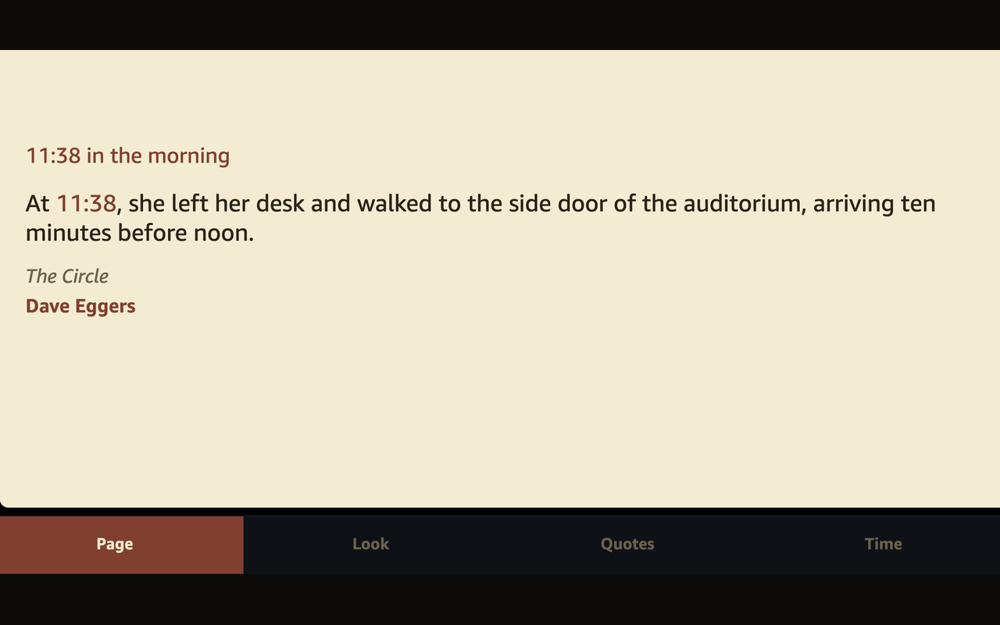
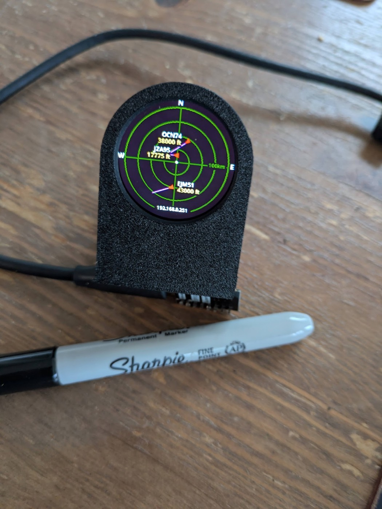
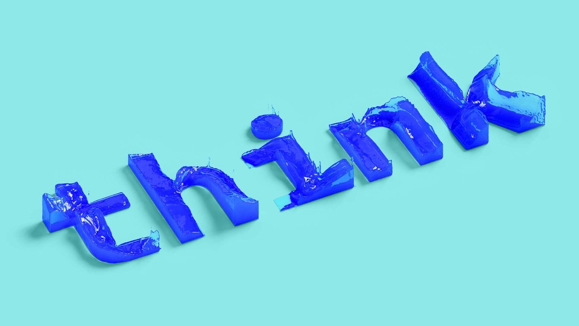
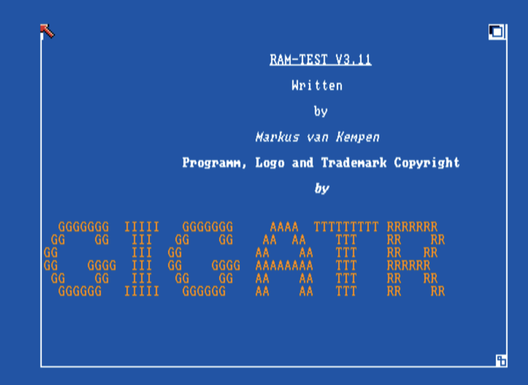

Video
IBM SPEED and beyond
A film about the work and the experiments — projects from the day job, and the ones built after 6pm. Weather labs, sensors, clocks, and the rest of the making.
IBM SPEED and beyondOpen source · Toronto · Developer advocate
Enterprise AI, devices, classrooms, and the odd ferry
25+ years building things at IBM. The badge says Executive Architect. The soul says developer advocate.
✦ Mensch — Yiddish/German for a person of integrity & good character
No projects match that search.
API exploration, editor extensions, and MCP — same tools in VS Code, Cursor, Bob, and the other editors
Discover, browse, and test IBM Maximo REST APIs from VS Code, Cursor, Antigravity, Bob, or Windsurf. Interactive query builder, schema viewer, code snippet generator, and Carbon Design System app templates.
Model Context Protocol server that connects AI assistants (Claude, ChatGPT, Copilot) directly to your Maximo instance. Query data, manage work orders, and explore APIs through natural language.
Lightweight editor extension for quick Maximo API connectivity, authentication management, and API testing in VS Code, Cursor, Antigravity, Bob, or Windsurf.
Agent builders, WxO MCP, and the WXO Labs catalog
Hands-on watsonx Orchestrate learning path: Python tools, MCP, SSO, RBAC, observability, and RAG — with runnable source for each lab.
Manage IBM Watsonx Orchestrate tools, agents, and connections from VS Code, Copilot, Cursor, Antigravity, Bob, Windsurf, or Cline. Accelerate your agentic workflow development.
Minimal MCP server that invokes a single Watson Orchestrate agent remotely. Configure once via env vars — the same stdio server in VS Code, Cursor, Bob, Antigravity, Windsurf, Cline, and Langflow when you only need chat with one agent.
invoke_agent(message) and get_agent() toolsnpx wxo-agent-mcp stdio transportGateway that routes many Slack channels to many Watsonx Orchestrate agents, with in-thread replies and a streamable HTTP toolkit for VS Code, Copilot, Cursor, Antigravity, Bob, Windsurf, and Cline. Install from npm. The GitHub repo is the docs and registry metadata.
npx @markusvankempen/slack-wxo-mcp-gatewayVisual tool builder and agent manager for Watsonx Orchestrate. Develop, test, and deploy skills and agents from VS Code, Cursor, Antigravity, Bob, or Windsurf.
Export, import, compare, and replicate Watson Orchestrate agents, tools, flows, and connections from VS Code, Cursor, Antigravity, Bob, or Windsurf. Activity bar browser, form-based editors, observability traces, and multi-environment management — powered by the bundled WxO-ToolBox CLI.
Original Bash CLI toolkit to export, import, compare, and validate IBM Watson Orchestrate resources. For the newer TypeScript CLI + VS Code extension, see WxO ToolBox.
Ticketing, Zendesk, and Code Engine gateways, plus the MCP Dev Summit talk. Maximo, Watsonx, and Quantum servers sit in their own tabs.
MCP (Model Context Protocol) is the open standard that lets AI assistants call real APIs instead of just talking about them. An AI assistant calls tools, and the MCP server talks to the platform APIs on its behalf.
Most of the MCP servers and extensions here work in the same editors: VS Code, Copilot, Cursor, Antigravity, Bob, Windsurf, and Cline. Extensions add visual UIs, diagnostics, and one-click
mcp.json setup.
How the pieces connect
VS Code · Copilot · Cursor · Antigravity · Bob · Windsurf · Cline
@markusvankempen/*-mcp
Maximo · WxO · Quantum · Zendesk · IBM Cloud
VS Code Marketplace, Open VSX, or npx. The same package installs in VS Code, Cursor, Antigravity, Bob, and Windsurf. Credentials stay local or on
Code Engine.
Ask the AI to list backends, query Maximo, manage WxO agents, submit OpenQASM, or handle Zendesk tickets — via typed MCP tools.
IBM Code Engine SSE gateways share one URL across the team — server-side secrets, dashboard, and connection test UI.
Full-stack MCP reference server — 10 tools, 3 resources, 5 prompts, auth, rate limiting, and a live observability dashboard. Run it with npx mcp-ticket-demo. Personal open-source project, not an
IBM product.
Control-plane extension for the ticket demo. Registers the server in VS Code, Cursor, Antigravity, Bob, or Windsurf, then checks health, tools, and diagnostics from the editor. Published as
MarkusvanKempen.lf-mcp-summit-demo.
extension/Model Context Protocol server for IBM Code Engine and Docker/Podman. Deploy, manage, and monitor containerized workloads from VS Code, Copilot, Cursor, Antigravity, Bob, Windsurf, or Cline — no CLI required.
Model Context Protocol server that connects AI agents to Zendesk Support. Create, search, assign, comment, and close tickets through natural language in VS Code, Copilot, Cursor, Antigravity, Bob, Windsurf, Cline, Claude Desktop, or watsonx Orchestrate. Solves requester attribution so Zendesk email replies route correctly.
npx) and Python (pip) implementationsOpenQASM 2.0 circuits, Quantum Lab, and remote MCP on Code Engine
VS Code extension for OpenQASM 2.0 on IBM Quantum — Quantum Lab, job polling, histograms, diagnostics, and one-click MCP setup in VS Code, Cursor, Antigravity, Bob, Windsurf, and Cline. Local stdio or remote Code Engine SSE.
/sseModel Context Protocol server for IBM Quantum — list backends, submit OpenQASM 2.0 circuits, poll jobs, and fetch histograms via natural language in VS Code, Copilot, Cursor, Antigravity, Bob, Windsurf, and Cline. Deploy remotely on IBM Code Engine with dashboard and SSE gateway.
npx @markusvankempen/quantum-openqasm-mcp (stdio)setup-remote-mcp.sh for IDE mcp.jsonWord clocks, radar, traffic, and the Englishtown ferry
A word clock for your Chrome new tab. 8×8 and 16×16 letter plates in English, German, French, Spanish, Italian, Dutch, and Portuguese. Companion to the ESP-WordClock8x8 desk clock.
English 8×8 WS2812 word clock for ESP32-S3 and ESP8266, with a web dashboard, live face simulator, MQTT, and OTA updates.

Alexa skillAlexa skill that tells the time with a line from a book. Voice on Echo, and a cream page on Echo Show and Fire TV. Say “Alexa, open ink clock.”

ESP32-C3 · MITLive ADS-B plane radar on ESP32-C3 with a round GC9A01 TFT, a self-hosted web dashboard, MQTT, and OTA updates.
Dual-LiDAR traffic counter for vehicle speed, length class, and ferry queue depth on ESP32, with LoRaWAN telemetry and a Node-RED dashboard.
LoRaWAN sensor node on a TTGO T-Beam: BME280, GPS, OLED, and a WiFi dashboard with a live map. Pax counting over WiFi and BLE is on the same board.
Real-time Englishtown ↔ Jersey Cove ferry tracker for Cape Breton. The public site covers the blog, slides, podcast, and architecture — AIS, a progressive web app, Node-RED, and a WLED status display.
From a teenager's living-room startup in 1988 to IBM Think 2020 — where it all started

Think 2020 · IoT labHyper-localized weather and crop prediction for IBM Think 2020. A Raspberry Pi, temperature sensors, and a camera feed Watson IoT. Node-RED sends that into Weather Underground, Watson Studio builds a model from historic and live data, and Visual Recognition reads the camera image. Vegetable attributes extend the forecast to what would grow in a garden three to six months out.

Amiga · 1988Memory diagnostic for GIGATRON Amiga 500 and 1000 expansion boards, written as a teenager in a living-room startup and recovered so it runs again in Amiberry.
Mensch, Maker and Nerd — Developer Advocate
Developer at heart. I'm always looking for ways to connect it, sense it, or make it easier for people to use data — especially with IoT and AI. I open-source things because I want them to exist, not because anyone asked.
The projects here span enterprise AI tooling, community devices, ferry trackers, classrooms, and the occasional hackathon. If it connects to something real or helps someone understand a platform, it's worth building and sharing.
Based in Toronto, that work shows up here as open-source MCP servers, IDE extensions, clocks, and community devices. Projects are Apache 2.0 or MIT.
Video
A film about the work and the experiments — projects from the day job, and the ones built after 6pm. Weather labs, sensors, clocks, and the rest of the making.
IBM SPEED and beyondSession
Building one MCP server teaches you the protocol. Building five teaches you what MCP actually is. This is a practitioner's talk about tool design, what is worth sharing across servers, READMEs people can actually use, and discoverability — where someone finds an MCP server today.
If you're building your second or third MCP server and want to go faster, this one's for you. The servers are the projects on this site.
Hackathons
In September 2023 I mentored at HackMIT, an IBM-sponsored weekend on the MIT campus. The challenge was connecting generative AI to real-world, real-time questions — hardware, embeddable AI, and cloud accounts on the table, any vendor welcome in the build.
Sixty-eight IBM submissions. After the pitches, the IBM prizes went to Reflexion Buddy, FireNet, and MediSum. Earlier, at HackMIT 2019, I was on the team that built Pill Safety.
 HackMIT 2019 video
HackMIT 2019 video
STEM education
For several years I taught hands-on STEAM at Six Nations Polytechnic. A class is about 70 minutes, so each lab fits in one sitting: Raspberry Pi, Node-RED, IBM Cloud, a Bluetooth candle, a burglar alarm, a 7-segment clock, and a ramp timed with infrared breakers.
The ESP8266 and DHT11 course wires a sensor, serves temperature and humidity on a page, and reads the time from NTP. The 2019 Christmas hack turned leftover PlayBulb candles into a hat light so students could be seen at night.
Demos
Sonification turns the IBM IoT building in Munich into sound: room bookings, lights, open windows, air quality, elevator speed, and the rest of the sensor stream. The write-up is on the blog, and the short film is on YouTube.
Animal Tracking with LoRaWAN is the saving-rhinos demo: low-power long-range sensors so rangers can follow the animals. At CeBIT, Watson Visual Recognition ran on a drone.
Public code for these lives at github.com/markusvankempen.